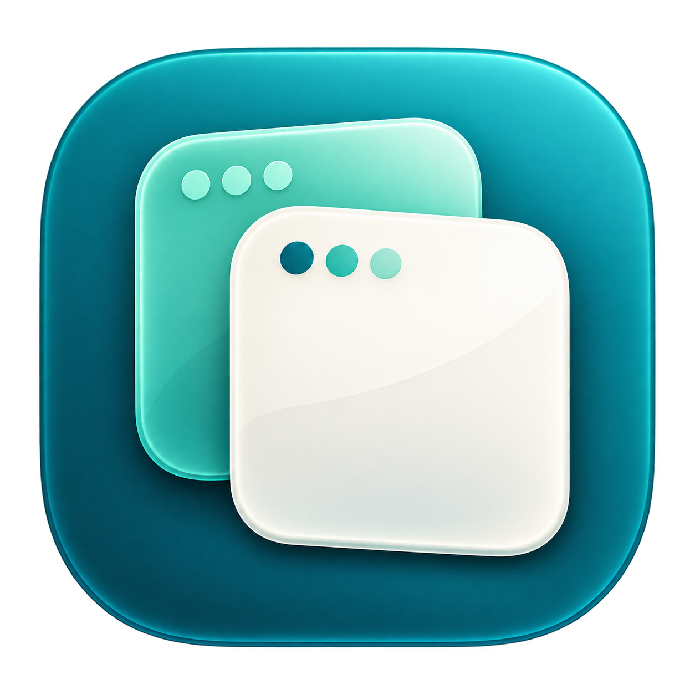

一眼认出，这是哪个你。
自定义显示名称与 .icns 图标，一眼区分私人和工作。硬分身还会修改实际进程名，供支持进程规则的代理工具识别。

AppDuoFOR MACEN免费下载 ↓不同图标，一眼认出不同身份。
不同名称，让分身各走各的网络。
名称、图标、数据，都按你的方式来。
WorkPersonal不必反复切换身份。
让每个空间，都有自己的节奏。
自定义显示名称与 .icns 图标，一眼区分私人和工作。硬分身还会修改实际进程名，供支持进程规则的代理工具识别。
为分身配置独立的数据目录。不同用途，分别管理，保留各自熟悉的使用状态。
打开 AppDuo 时检查本机原应用版本。有更新，就在硬分身图标上提醒，快捷升级。
不同分身可分别接收通知。工作消息、私人消息各有归属，不用来回切换查看。
需目标应用支持通知，并开启应用内与 macOS 通知权限。实际提醒受专注模式、应用运行状态及版本兼容性影响。
¹ 自定义进程名称适用于硬分身。 ² 网络代理效果取决于目标应用是否支持对应设置。
不用写命令创建分身。
跟着向导，把剩下的交给 AppDuo。
从 Mac 中选择需要创建分身的 .app 应用。
选择分身方式，设置名称、图标、语言与网络。
确认配置后创建，直接从分身卡片打开应用。
以微信为例：私人保留原版绿色图标，两个工作分身分别使用蓝紫色和橙色图标。通过不同进程名，为三个身份配置各自的网络出口。
原版绿色
WeChatCN蓝紫图标
WeChatHK橙色图标
WeChatUS以上为微信使用示例，不代表 AppDuo 仅支持微信。分身图标需在创建时自行选择；本机出口位于国内时，DIRECT 才是国内直连。节点与策略组由你在代理工具中配置，AppDuo 不提供代理节点。
三种图标、三个名称，在程序坞中各占一个位置；不同身份的消息，分别提醒。
今晚一起吃饭，记得早点回来。
下午的会议资料已更新，请查收。
设计稿已确认，可以开始下一步。
以上为界面示意，消息内容为虚构。实际通知来源的名称与图标取决于应用和 macOS 注册结果；需允许通知，且受专注模式、应用运行状态及版本兼容性影响。
选择硬分身，将分身名称设为上方英文进程名，中文名称填入“显示名称”。在代理工具中建立“香港工作”和“美国工作”策略组，再合并规则。
规则放在可能提前命中的域名、GEOIP、规则集和 MATCH 之前。正则同时覆盖主进程与带连字符前缀的辅助进程。
# 合并进现有配置，不是完整的代理配置文件
mode: rule
find-process-mode: always
rules:
- PROCESS-NAME-REGEX,^WeChatCN(-|$),DIRECT
- PROCESS-NAME-REGEX,^WeChatHK(-|$),香港工作
- PROCESS-NAME-REGEX,^WeChatUS(-|$),美国工作客户端需实际接管连接并识别本机进程。微信不一定遵循系统 HTTP 代理，可按客户端说明使用 TUN 等方式接管。在连接列表核对 WeChatCN、WeChatHK、WeChatUS 的进程名、命中规则和出口策略。
支持进程名、进程路径或正则分流的工具，可按各自语法配置；此 YAML 示例适用于支持 PROCESS-NAME-REGEX 的 Mihomo 内核，不能直接套用到所有 Clash 版本或其他工具。仅修改显示名称不足以分流；软分身仍使用原应用进程。应用内环境变量代理是另一种方式，取决于应用是否支持。
不同分身可分别接收通知，工作与私人消息各自提醒，无需来回切换到对应分身查看。需要目标应用支持通知，并在应用内和 macOS 中允许通知；专注模式、运行状态及第三方应用版本可能影响提醒。 通知来源的名称与图标显示取决于应用及系统注册结果；不保证已退出的分身仍能收到通知。
需要 macOS 14 或更高版本，支持 Apple Silicon 和 Intel。创建分身需要 Apple Command Line Tools；首次使用可在终端运行 xcode-select --install 安装，无需完整 Xcode。
AppDuo 提供内置应用规则与自动探测，但第三方应用不同版本的兼容性可能不同。登录、多开、通知等功能需要在目标应用中实际验证。
升级会保留分身数据、图标和配置。请先更新本机原应用，再打开 AppDuo 检测；退出正在运行的分身后，即可升级。构建失败会保留旧分身。
下载对应芯片的 DMG，将 AppDuo 拖入「应用程序」。当前版本尚未经过 Apple 公证；如 macOS 阻止打开，在确认下载来源后，可前往「系统设置 → 隐私与安全性」允许打开。
从一个分身开始，让你的 Mac 更有条理。
macOS 14+ · DMG 安装包 · GPL-3.0 开源查看版本记录 ↗